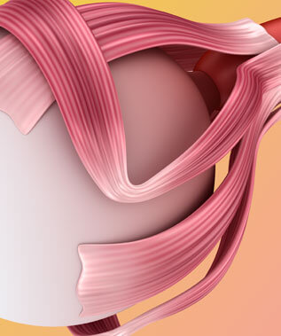

Aparatul muscular focalizează ochii
astfel încât imaginile rezultate, care trec prin cristalinul,
să fie proiectate pe retină

Tulburări ale echilibrului muscular
creează o stoarcere insuficientă sau excesivă a globului ocular

Cristalinul se deformează
focalizarea este distorsionată, imaginea se încețoșează